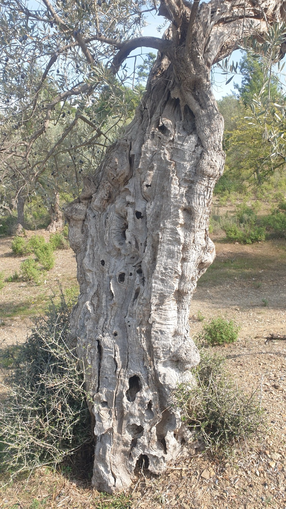
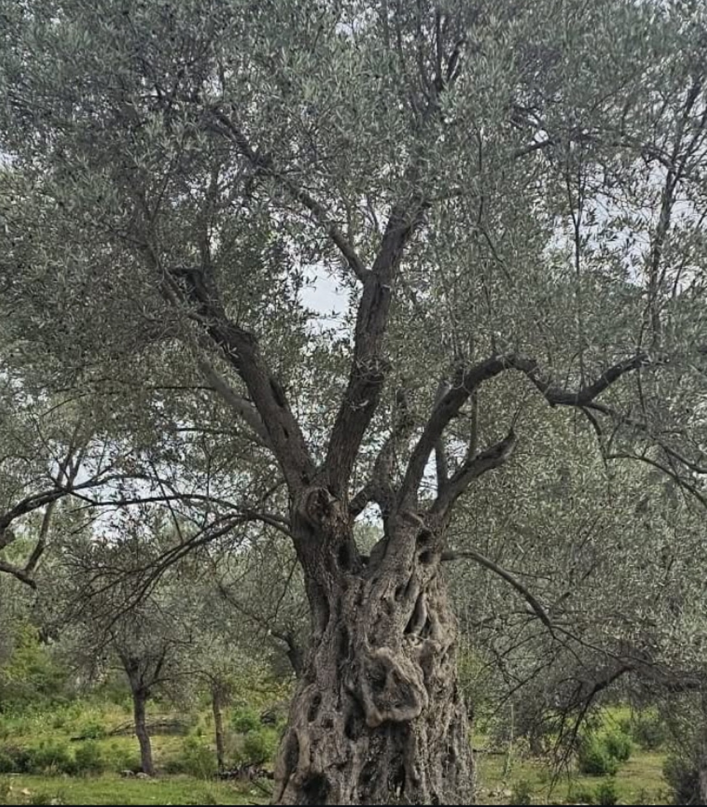
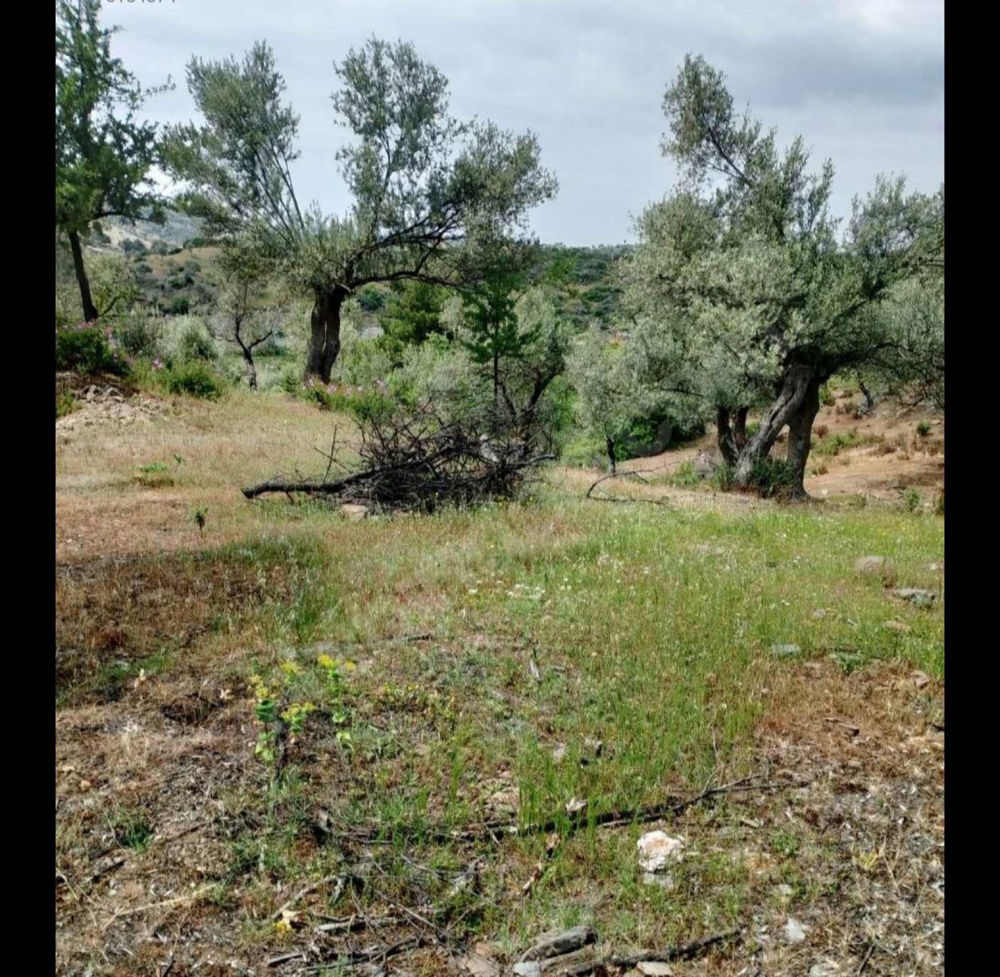
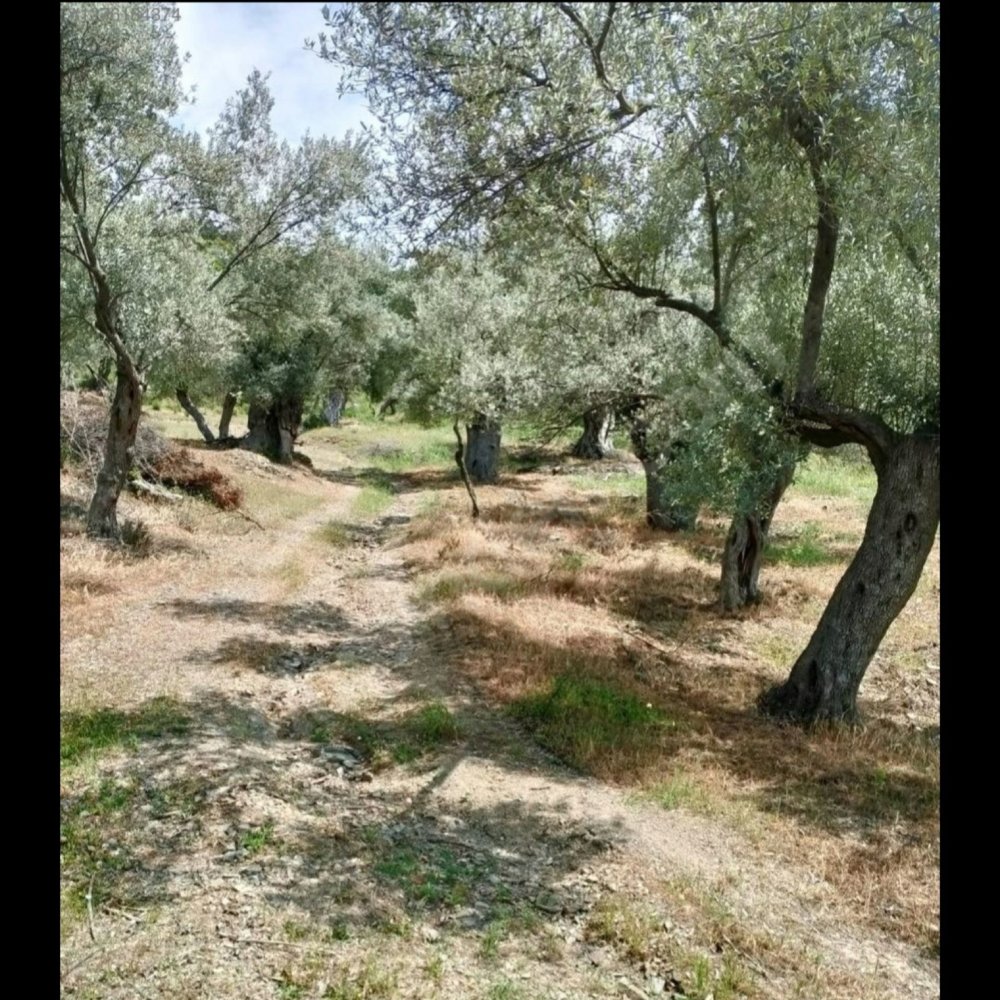
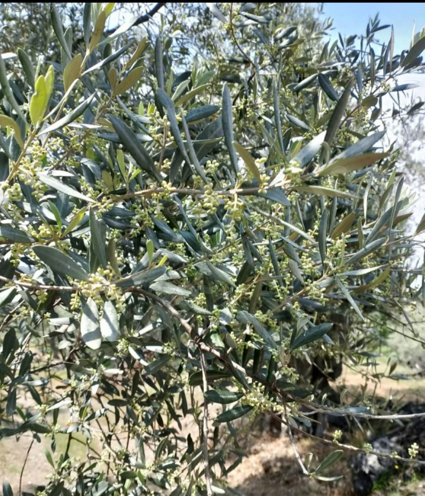
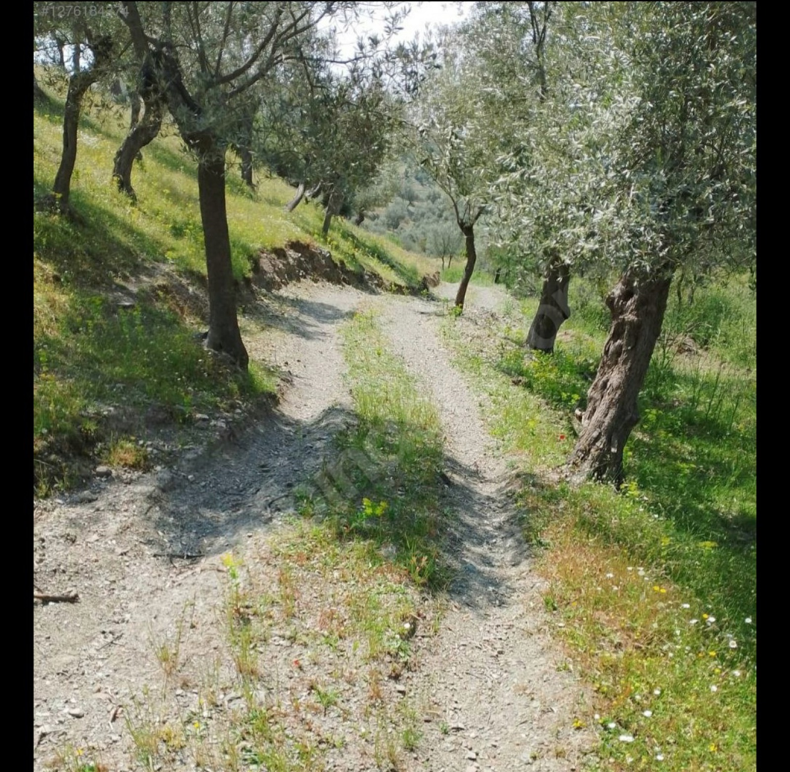
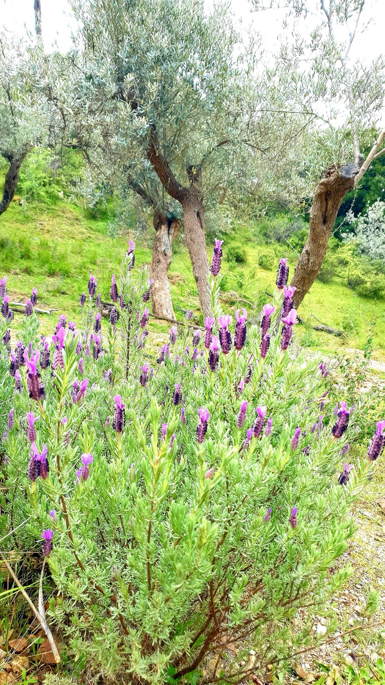
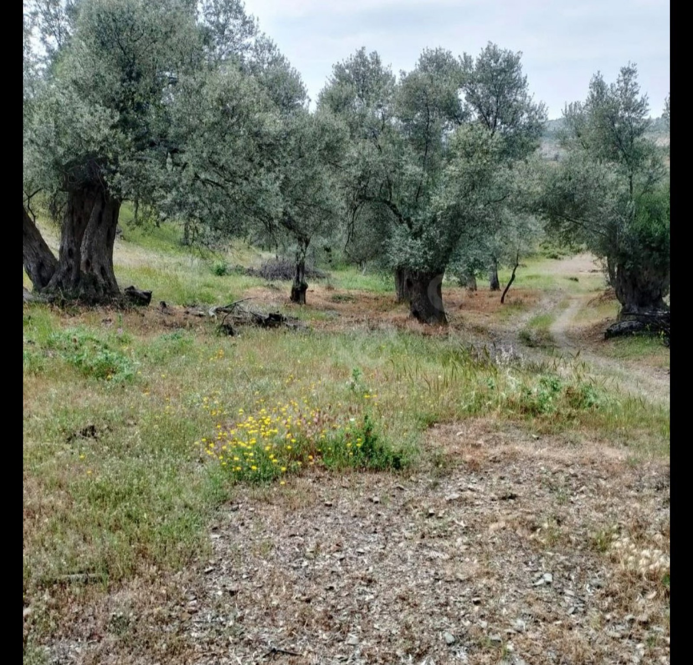
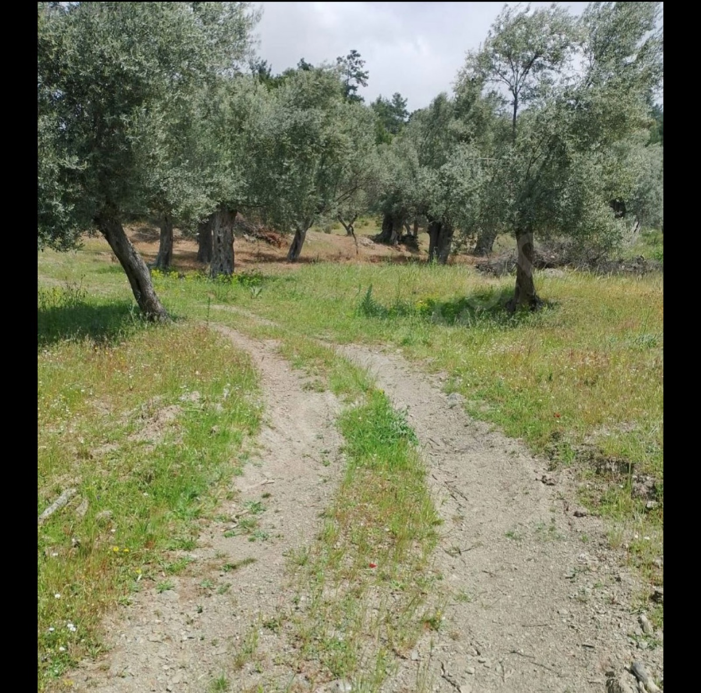
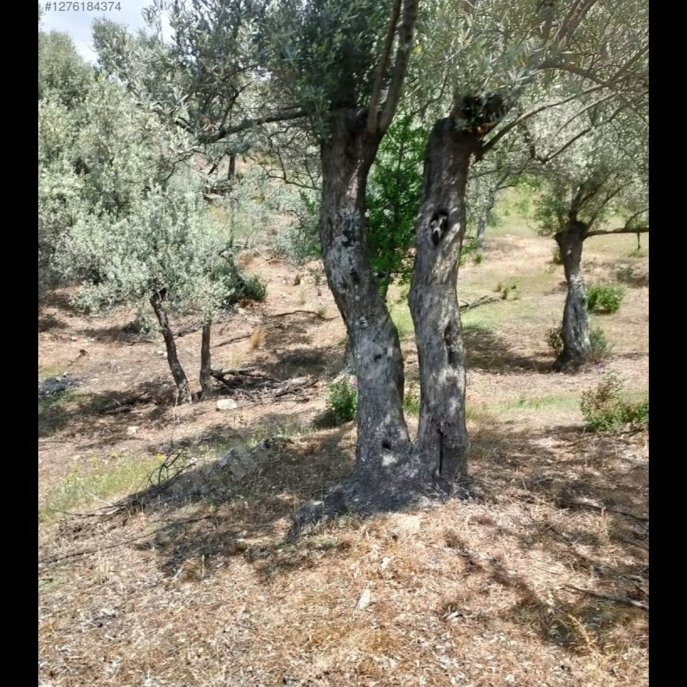

🫒 Beyler Köyü · Seferihisar · İzmir
“Geçmişe borçlu, geleceğe sorumluyuz…”
Ara: 0532 214 73 56 Yol tarifiHikayemiz
Seferihisar'ın tepelerinde, Beyler Köyü'nün yamaçlarında asırlık zeytin ağaçlarımız yaşıyor. Gövdeleri zamanın izlerini taşıyan bu kadim ağaçlar, bize bu topraklardan emanet.
Biz onlara özenle bakıyor, meyvelerini emek vererek topluyor ve sofranıza doğal zeytinyağı olarak getiriyoruz.
Zeytinin çok büyük yaşama sevinci var. Doğa, huzur, sağlık — hepsi bir damlada.

Neden Beylerbeyi?
Seferihisar'ın asırlık zeytin ağaçlarından, doğanın içinden.
Emek ve özenle üretilen, katkısız zeytinyağı.
Zeytinliğimiz her gün 09:00–17:00 arası ziyarete açık.
Bahar bizimle
İlkbaharda zeytinliğimiz yeşile bürünür, dere akar, lavantalar açar. Mevsimlerin her biri ağaçlarımıza ayrı bir güzellik katar.
Instagram'da takip etZeytinlik









Yorumlar
Doğal, tertemiz ve gerçekten çok kaliteli zeytinyağı. Beylerbeyi Zeytinliği’nde emeğin ve özenin farkı hemen hissediliyor. Gönül rahatlığıyla tavsiye ederim.Nazım K. · Google
Mükemmel bir yer.Hakan G. · Google
Ziyaret